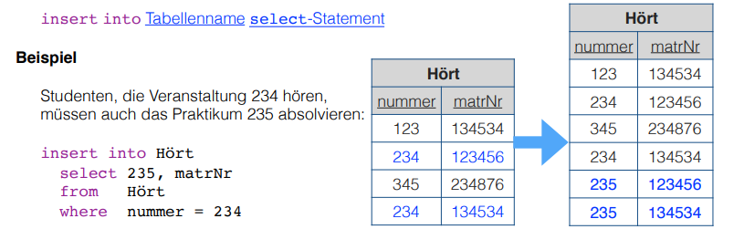
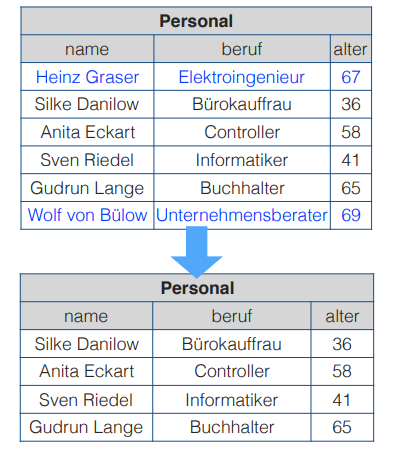
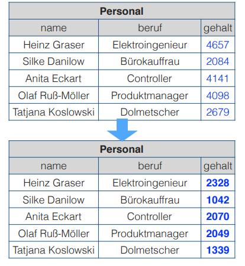
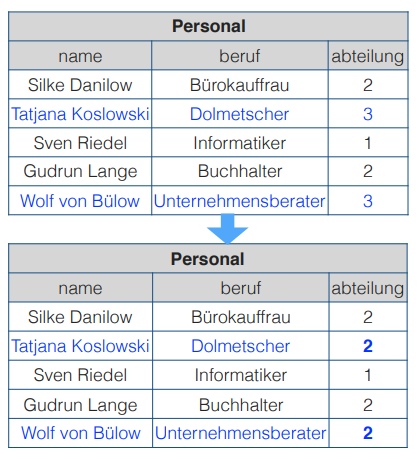

This lecture is the third part of the Introduction to SQL that we began in lecture 5.
Introduction to SQL
What we'll cover here:
- Data Manipulation
- create, update, delete data
- Data Definition
- data integrity rules / constraints
- Relational Views (Relationale Sichten)
Data Manipulation
Create Data
With the command insert tuples can be added to tables. There are different syntactical variants.
-
insert a complete data set
insert into <tablename> values (<value list for attributes in accordance to schema>)- eg to add to the faculty table
insert into Faculty values ('Computer Science', 'Street of Nations 62, 09107 Chemnitz', 14568)
name adress persNr Computer Science Street of Nations 62, 09107 Chemnitz' 14568 - note that values for all attributes have been provided and that they were in correct order
-
insert an incomplete data set
insert into <tablename> (<attribute list>) values (<value list for attributes in attribute list>)- eg to add the math faculty without knowledge of the address
insert into Faculty (name, persNr) values ('Mathematics', 91876)
name adress persNr Computer Science Street of Nations 62, 09107 Chemnitz' 14568 Mathematics null 91876 - note that only the values for the attributes provided in the attribute list are added and that the other attributes are filled with null (resp null values)
-
insert a query result
insert into <tablename> <select statement>- results of a select statements can be inserted into a table when the domains of attributes are compatible
- for example 
Delete Data
With the command delete tuples that fulfill certain criteria/conditions may be deleted from tables. The syntax is delete from <tablename> where <condition>
For example
delete from Personal where alter >= 67
has the following result in this table 
Update/Change Data
With the command update attributtes of all tuples in a table can be changed in the same way. The syntax is update <tablename> set <attribute1> = <expression1>, <attribute2> = <expression2>, ...
For example
update Personal set gehalt = gehalt/2
has the following result in this table 
It is also possible to provide conditions to update. Then the syntax stays the same but gets an where statement added onto it: update <tablename> set <attribute1> = <expression1>, <attribute2> = <expression2>, ... where <condition>
For example to merge department 3 into department 2
update Personal set Abteilung = 2 where Abteilung = 3
has the following result in this table 
Procedure of Changes
Basically there are two steps when changing data:
- creation of a temporary relation with the candidates that are due to be changed
- execution of the change operation
-
insert→ insertion of the temporary table in the target table -
update→ change of the attributes initially in the temporary table (based on comparisons with the values in the original table) and then adoption into the target/original table -
delete→ mark the tuples that shall be deleted an deletion in one step
-
Why this effort you may ask? Well conditions may include subqueries which would else operate on data/tables that are already modified (partially)!
Data Definition
We now look at the Data Definition Language (DDL) which is mainly used to define database structure and the rules for accessing the data.
Table Management
To create a new table use the command create table {TABLENAME} ( {ATTRIBUTE_DEFINITION_1}, {ATTRIBUTE_DEFINITION_2}, ... ). To alter the schema of a table after its creation use alter table {TABLENAME} add column ({ATTRIBUTE_DEFINITION}) to add an attribute, alter table {TABLENAME} alter column ({ATTRIBUTE_DEFINITION}) to modify an attribute and alter table {TABLENAME} drop column {ATTRIBUTE_NAME} to delete an attribute. If you want to delete a whole table issue the command drop table {TABLENAME}.
Now to define an attribute you need to provide a data type for that specific attribute.
Here are the data types SQL supports by default with some examples:
-
Boolean
- either
trueorfalse- when null values are allowed then
unknownis also supported as the null value
- when null values are allowed then
- boolean values can be compared and are assignable
- they compare as
true > falseand in every comparison where the null value orunknownis an operand (is involved) the result will beunknown
- they compare as
- either
-
Strings/Characters
The number of allowed characters (max length) is usually defined as well when specifying such attribute type. If the number/amount/count is omitted then usually 1 is the predefined max length of the character string. Character strings can be defined in the following ways:
-
character ({AMOUNT})orchar ({AMOUNT}- in this case the character string always has the exact length of {AMOUNT}
- when strings are assigned that are shorter than {AMOUNT} the string is padded by whitespaces on the right hand side
-
character varying ({AMOUNT})orvarchar ({AMOUNT}- in this case the character string has a maximum length of {AMOUNT}
- shorter strings therefore need less space (internally)
-
-
Numericals (exact)
- are used for exact representations of numbers
- the precision of a number is specified by providing the the amount of digits to be hold
- and for decimal numbers the amount of decimal places can be specified as well
numeric [{PRECISION}[, {DECIMAL_PLACES}]]- without specification the amount of decimal places is always 0 and the precision depends on the specific precision
- there are also some predefined variants without decimal places eg
integer,smallint,bigintthe concrete specification of those depends on the implementation as well -
numeric(7,2)represents all numbers from -99999.99 to 99999.99 with two decimal places
-
Numericals (approximal)
- are used for approximate representations of floating point numbers in the common expression via significand (Mantisse, Ziffernstellen einer Gleitkommazahl vor der Potenz) and exponent
float [{PRECISION}]- {PRECISION} specifies the "size" of the significand
- there are also some predefined float types for example
realanddouble precisionof which the precision is also dependant on the specific implementation - example float literals:
10E3or-3.1E-6
-
Date and Time
There are three different data types to represent dates and times. The typical date and time components can be accessed individually:
-
daterepresents a calendric date value and offers the componentsyear,monthandday -
timerepresents time values and offers the componentshour,minuteandsecond(precision is preset in seconds) -
timestamprepresents time and date values at the same time (precision is preset to microseconds)
Date and time values can optionally be parameterized to set the precision explicitly and handle time zones.
-
-
Interval
The data type
intervaldescribes a time period/range. Such range/period may for example occur as the result when subtracting date or time values. Intervals may also be added to or subtracted from date values.- slides: Wird als zusammenhängender Teilbereich zwischen Start- und Endeinheit
(year, month, day, hour, minute, second)definiert - slides example:
interval year to monthcovers all intervals between 0 years, 0 month and 99 years, 11 months;interval hour to second(2)covers all intervals between 0 hours, 0 minutes, 0 seconds and 99 hours, 59 minutes, 59.99 seconds (the parameter2specifies the precision of the seconds component)
- slides: Wird als zusammenhängender Teilbereich zwischen Start- und Endeinheit